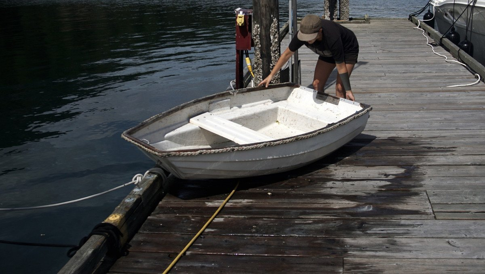
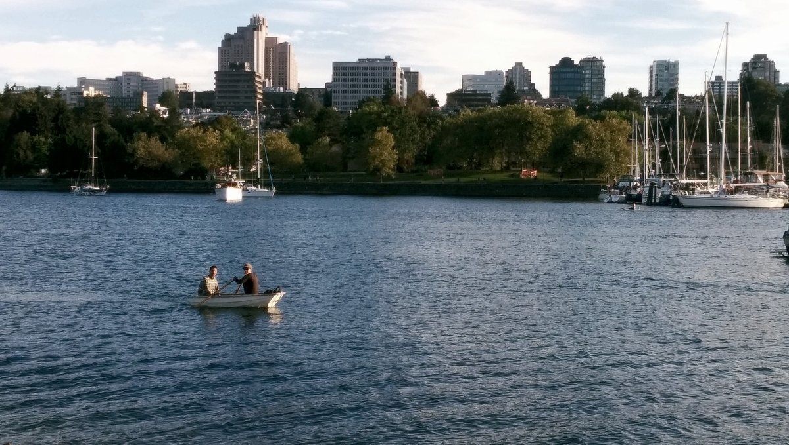
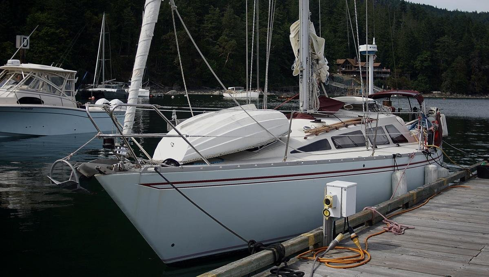
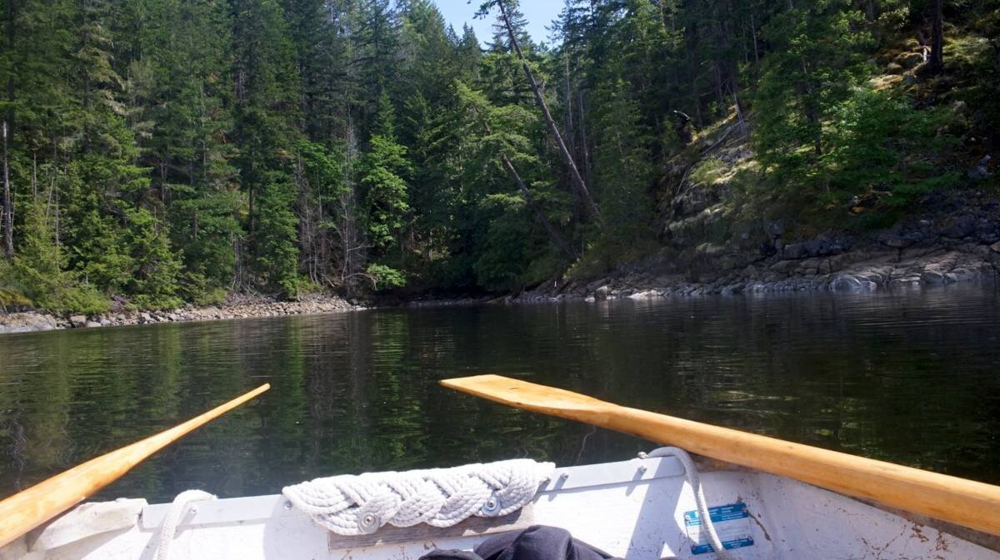
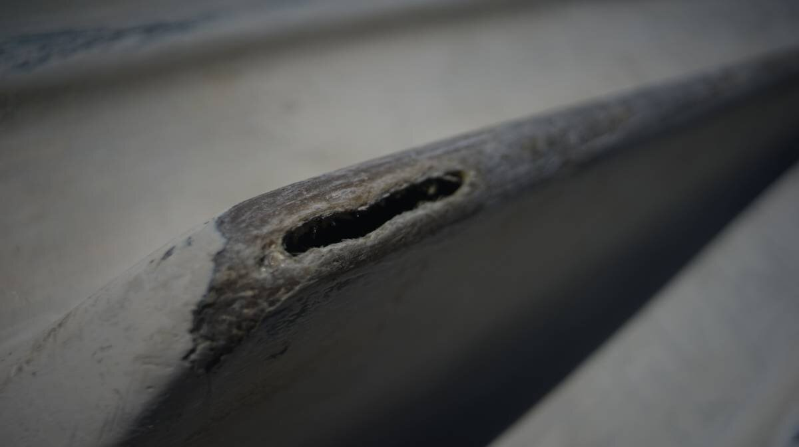
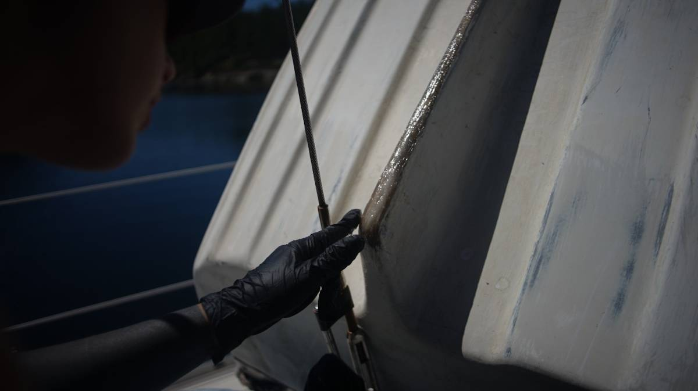

teapot
Our dinghy is named Teapot, acquired on August 9th 2021. It is made of fibreglass, and is 7 ft long. We bought it off Linda from SV Temenos. At the time it bore the name Mini T.
We like to take it out on solo trips in evenings, in calm weather.
We had a soft dinghy for a while, named iggy but it died in the South Pacific.
Teapot's pram shape allows it to fit well in front of our baby stay. When we move from one anchorage to the other, we always hoist it back up on deck, we never tow it. When anchoring, we tie a halyard to a strongpoint forward of the dinghy(visible in above photo), and lift it up (just the front) to have access to the anchor locker underneath. The aft portion of the dinghy is tied down, so it doesn't shift around when we sail, and because it's tied down at that point, it works as a fixed pivot to lift the dinghy, safely.
Sometimes we like to daydream about what life on the water could be like if no one had motors.
28.05.22. Teapot spends a lot of time laying upside down on our deck. There is a metallic band on the top border of the stern, and so we added a protective rope map on the stern to help protect the fibreglass deck from nicks of scratches. Rekka likes to make rope mats, and we had this one lying around. We added bolts with oversized washers to hold it down, bolted into the wooden frame of the dinghy (using the wooden outboard mount).
We also made a bridle, to make it easier to move Teapot from boat to water, or from water to boat. Teapot has two handles on the outside of its stern, and a ring (for towing) on the outside of the bow, we added lines to all 3 points with a closed loop sown on both ends. When we want to lift the dinghy, we take a halyard and run the shackle through each loop, and winch it up, or down from the cockpit. Someone has to go up front to help lead Teapot either off, or on the bow. When lifting the dinghy from water to Pino, we lay it on deck bottom down, and we have to go up front to flip it back over (we do that in reverse to put it back in the water).
17.06.22. We found a crack in Teapot's keel.
we had noticed there was a weakness there before, a bit an indent in the material, but we did not think there was an actual hole. When hauling the dinghy up on deck, we noticed how heavy it sometimes got... that was because the inner compartment was half-filled with seawater. We thought the hole came from elsewhere, from the plug on the inside (used to empty water trapped in the inner compartment), but as soon as we'd pump the water out, in came more water. We think the hole enlargened itself, after we hauled the dinghy ashore over rocks, barnacles a few times this year. We cleaned up the hole and added some thickened epoxy to fill it. We hope to add either a strip of wood, or metal to the whole length of the keel so it doesn't get eaten up again.
